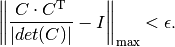
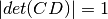

is_proj_plane_distorted¶
-
astropy.wcs.utils.is_proj_plane_distorted(wcs, maxerr=1e-05) [edit on github][source]¶ For a WCS returns
Falseif square image (detector) pixels stay square when projected onto the “plane of intermediate world coordinates” as defined in Greisen & Calabretta 2002, A&A, 395, 1061. It will returnTrueif transformation from image (detector) coordinates to the focal plane coordinates is non-orthogonal or if WCS contains non-linear (e.g., SIP) distortions.Note
Since this function is concerned only about the transformation “image plane”->”focal plane” and not about the transformation “celestial sphere”->”focal plane”->”image plane”, this function ignores distortions arising due to non-linear nature of most projections.
Let’s denote by C either the original or the reconstructed (from
PCandCDELT) CD matrix.is_proj_plane_distortedverifies that the transformation from image (detector) coordinates to the focal plane coordinates is orthogonal using the following check:
Parameters: wcs :
WCSWorld coordinate system object
maxerr : float, optional
Accuracy to which the CD matrix, normalized such that , should be close to being an orthogonal matrix as described in the above equation (see
 ).
).Returns: distorted : bool